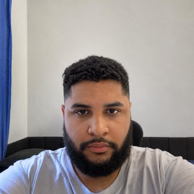

CopaLive (Aplicativo em desenvolvimento)
Web AppO CopaLive é um app de futebol para acompanhar placares ao vivo, resultados, competições e clubes favoritos em um só lugar.
Olá, eu sou
Transformo ideias em interfaces modernas e funcionais. Sou apaixonado por tecnologia e estou sempre buscando aprender, criar e evoluir como desenvolvedor.

Sobre mim
Sou desenvolvedor Front-end em formação, focado em criar experiências digitais que unem design, performance e usabilidade. Tenho interesse em aprender novas tecnologias, desenvolver projetos práticos e evoluir constantemente na área.
Meus projetos
O CopaLive é um app de futebol para acompanhar placares ao vivo, resultados, competições e clubes favoritos em um só lugar.
Painel administrativo para gestão de serviços residenciais, desenvolvido como projeto acadêmico.
Um sistema voltado para facilitar o processo de reserva de corridas, realizem reservas de forma rápida e eficiente.
Interface inspirada em uma plataforma de streaming, praticando estrutura semântica, layout responsivo e JavaScript.
Vamos conversar
Estou aberto a novas oportunidades, projetos e conexões. Vamos tirar uma ideia do papel?